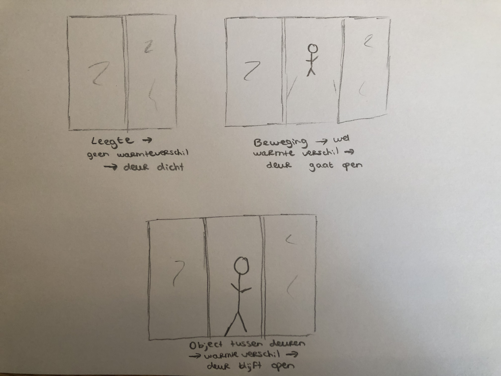

In dit assignment ga ik in op het Homeostasis model. Homeostasis betekent de neiging die er is tot het bereiken van een intern evenwicht en het handhaven van dat evenwicht. Het homeostasis model werkt door het identificeren van behoeften. Deze behoeften worden beïnvloed door eigen handelen of externe prikkels.
Het homeostasis model kan op apparaten worden toegepast. Elk apparaat heeft primaire behoeften om zijn of haar functie(s) uit te voeren. Een automatische schuifdeur heeft de behoefte om een object te signaleren wat zich voor de schuifdeur bevindt zodat de schuifdeur open kan gaan. Een andere primaire behoefte is om een leegte te signaleren. Dan gaat de schuifdeur dicht. De derde primaire behoefte is om een object tussen de deuren te signaleren. In dat geval blijft de schuifdeur openstaan. Verder is een primaire behoeften om het gebruikscomfort van men te verbeteren. Ze detecteert beweging, wat voor men erg gemakkelijk is, omdat ze daardoor zelf geen deur open hoeven te maken.
Om een schuifdeur automatisch te maken zijn sensoren, een sleutelschakelaar, een toegangscontrolesysteem of een motorslot nodig. Een automatische schuifdeur werkt meestal met een infrarood sensor. Deze sensor heeft stroom nodig om op te werken. Een infraroodsensor is gevoelig voor warmteverschillen. Mensen, dieren, et cetera beïnvloeden dus wanneer de deur wel of niet opengaat. Als de sensor een warmteverschil waarneemt en detecteert dat er beweging is, zal de sensor een reactie geven aan de schuifdeur waardoor de schuifdeur automatisch open zal gaan. Dit is de voeding van de sensor. Als er geen bewegend warmteverschil is, zal de deur zich in de ruststand bekeren. Wanneer er wel sprake is van een bewegend warmteverschil, zal de sensor een seintje doorgeven. De sensor wordt zich dan bewust van een warmteverschil. Hierdoor komt de deur in actie.
Artificial Creatures gaan om kunstmatige intelligentie. Ik vind het gebruik van stem bij apparaten erg interessant. Dit komt, omdat het dan nog een beetje socialiteit toont. Ik vind het mooi als er digitiale apparaten zijn waarbij het sociale niet geheel verloren gaat. Dat is de reden dat ik daar onderzoek naar wilde doen en daar meer over te weten wilde komen. Het sociale element komt bij het gebruik van stem meer tot uiting dan wanneer je via knoppen met een apparaat werkt. Je moet namelijk tegen het apparaat praten om je wens tot uiting te brengen. Praten doe je ook om met mensen te interacteren, daarom ligt het dichter bij socialiteit. Wanneer je met een apparaat praat, bestaat er de kans dat men voor een deel vergeet dat er techniek achter zit. Je stem is altijd beschikbaar. Dat maakt pratend interacteren met een apparaat gemakkelijk.
Er is een duidelijk verschil tussen een stemaansturing en bijvoorbeeld een smartphone. Wanneer je met een apparaat interacteert op basis van stem, vergeet je de omgeving niet, omdat het zich integreert in de context. Een smartphone vraagt je de omgeving te vergeten, omdat je je compleet richt op wat er op je scherm staat.
Ik vind het gebruik van stem bij apparatuur iets heel moois. De wereld wordt steeds digitaler en automatischer. Hierdoor kan het sociale aspect van de samenleving verloren gaan. Door stemgebruik in de automatisering toe te passen, zal het sociale aspect naar mijn idee minder snel verloren gaan.
Ik heb een TED-talk gekeken over een “dinosaurus friend” genaamd Pleo. Dit is een kleine robot. Hij luistert naar de stem van zijn baasje. Ze hebben 40 sensoren over hun gehele lichaam, 7 processoren en 14 motoren. Ook hebben ze USB en een SD-kaart. Hierdoor kan je de robot zelf aanpassen naar hoe jij wilt dat hij zich gedraagt. Je kan ertegen praten en het lijkt of ze echt luisteren, omdat ze zich naar de stem gedragen. Het doel met deze dinousaurus friends, is dat mensen empathie naar dingen moeten voelen om uiteindelijk meer menselijk te zijn in de wereld van robots. Het team die Pleo bedacht heeft hoopt dat ze dit kunnen bereiken door mensen kleine kunstmatige wezens te geven, zoals deze zogenoemde lovebots, waarvan ze kunnen houden. Deze robots veranderen ook over tijd en ze creëren ook een gevoel van zorg.
Ik vind dit een enorm leuk idee. Hoe leuk is het om je eigen “vriend” zo vorm te geven dat jij er gelukkig van wordt en waar je ook nog tegen kan praten. Ik vind het enorm bijzonder hoe mensen dit kunnen maken. Voor de technologie is dit ook een stap vooruit in de toekomst naar mijn idee, omdat ze gebruik kunnen maken van stemaangestuurde reacties.
Nu ik na ben gaan denken, zie ik dat dit onderwerp eigenlijk al veel voorkomt in het dagelijks leven. Het is een onderwerp dat gaat over kunstmatige intelligentie. Enorm veel technologieën behoren tot dit onderwerp. Denk hierbij aan robots, schuifdeuren, printers, brandalarmen, beveiligingssystemen van auto’s, zelf inparkeer optie van auto’s en noem maar op. Ik denk dat de robots in de toekomst over nog meer functies beschikken en dat ze zelfs de wereld overnemen. Ik denk dat robots in het huishouden voor gemak gaan zorgen. Er bestaat al een stofzuiger die zelf zuigt. Ik gok dat er straks ook supersonische keukens zijn waardoor het maken van maaltijden wordt vergemakkelijkt en dat er nog meer op stemaansturing berust.
Wat ik het meest waardevolle aan dit onderwerp vind, is dat het inspeelt op gemak. Dingen worden door robots aangestuurd om het gemak van men te verbeteren. Mensen worden er lui van. Ik merk zelf ook dat ik het heerlijk vind als dingen automatisch worden gedaan.
Gebruikt voor Assignment
Activeren en beveiligen van automatische schuifdeuren - Fortop. (n.d.).
Geraadpleegd op 11 mei 2019, van https://fortop.nl/knowledge/applicatievoorbeelden/activeren-en-beveiligen-van-schuifdeuren/
Automatische schuifdeuren. (n.d.).
Geraadpleegd op 11 mei 2019, van https://www.deurplus.com/zakelijk/automatische-deuren/schuifdeuren/
Hoe werkt een sensorlamp? - Sfeer en Living. (2017, April 10).
Geraadpleegd op 11 mei 2019, van https://sfeerenliving.nl/hoe-werkt-sensorlamp
Hoe wordt een automatische schuifdeur gemaakt? |. (n.d.).
Geraadpleegd op 11 mei 2019, van https://www.faacbv.com/nl/blog/hoe-wordt-een-automatische-schuifdeur-gemaakt.aspx
Hoe wordt een automatische schuifdeur gemonteerd? . (n.d.).
Geraadpleegd op 11 mei 2019, van https://www.faacbv.com/nl/blog/hoe-wordt-een-automatische-schuifdeur-gemonteerd.aspx
Gebruikt voor Research
De Sanctis, J. (2019, May 6). L’interaction vocale ou l’oubli des techniques - Blog SPOON .
Geraadpleegd op 11 mei 2019, van http://reflections.spoon.ai/2019/05/06/linteraction-vocale-ou-loubli-des-techniques/
Chung, C. (2008, September 25). Playtime with Pleo, your robotic dinosaur friend.
Geraadpleegd op 11 mei 2019, van https://www.ted.com/talks/caleb_chung_plays_with_pleo